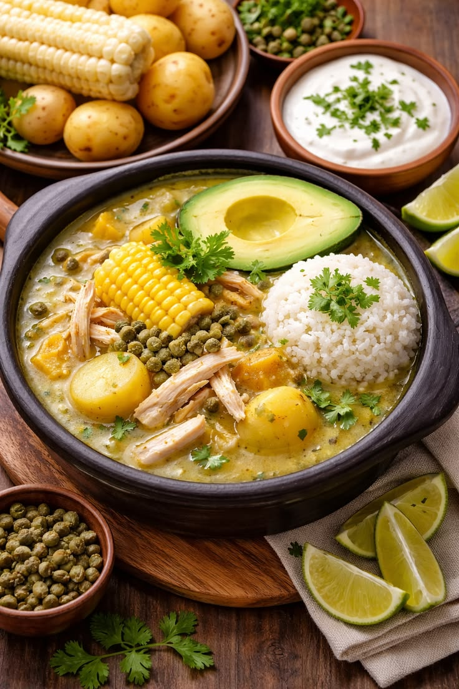
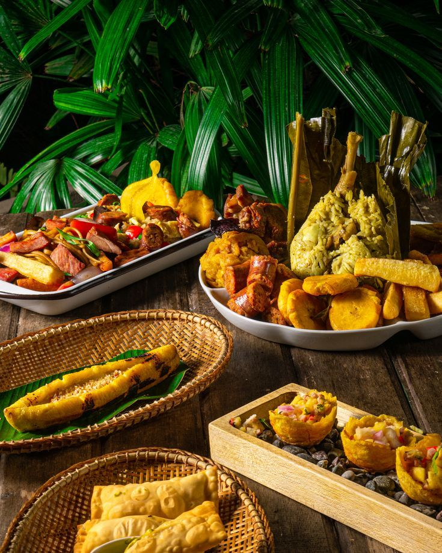
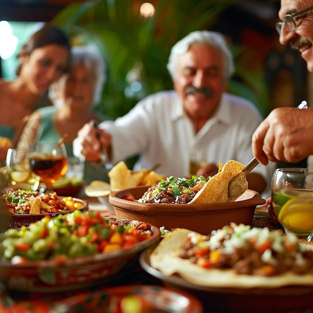
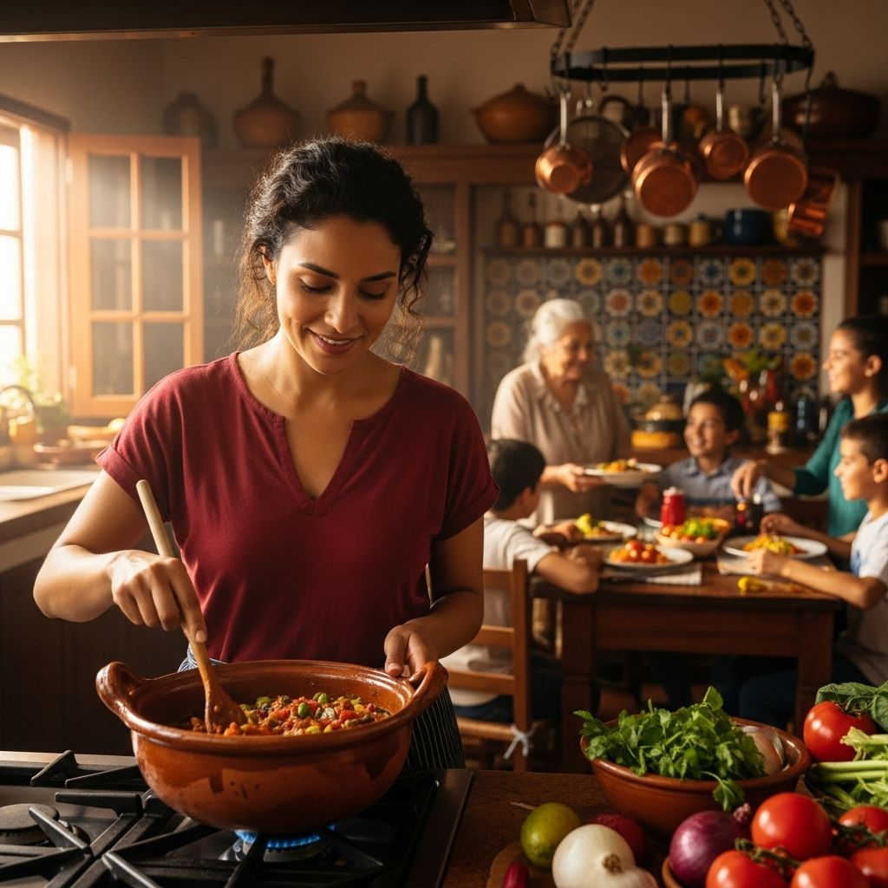
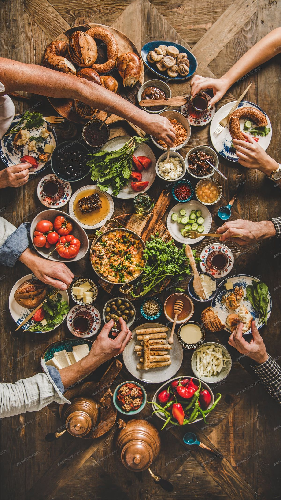

TRADICIÓN
Sabor de nuestra tierra
Preparaciones tradicionales con ese toque casero que nos caracteriza.

En Cuchara Rebelde celebramos la riqueza de nuestra gastronomía criolla. Disfruta preparaciones llenas de tradición, ingredientes y ese toque casero que nos hace volver por más.


En Cuchara Rebelde creemos que los mejores momentos se viven alrededor de una buena mesa. Por eso, queremos ofrecer una experiencia gastronómica inspirada en los sabores de nuestra cocina criolla.
Cada preparación busca conservar ese toque tradicional que convierte una comida en un recuerdo especial.
Descubre nuestros saboresDescubre algunas de las preparaciones que representan nuestra esencia criolla.

Preparaciones tradicionales con ese toque casero que nos caracteriza.

El encuentro perfecto entre tradición, sabor y buenos ingredientes.

Una experiencia de sabor para disfrutar y compartir en familia.
En Cuchara Rebelde siempre hay un buen motivo para sentarse a la mesa.